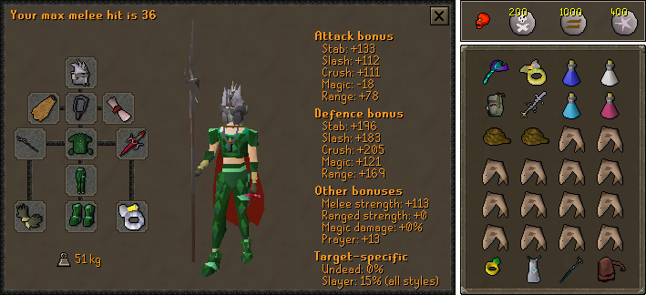
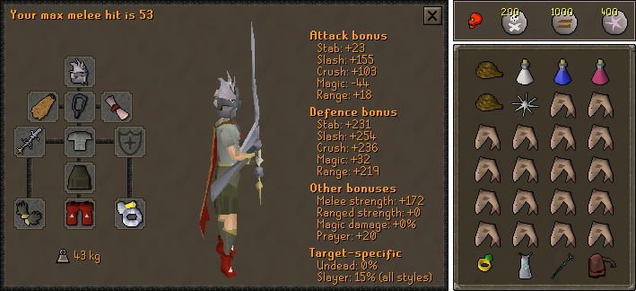
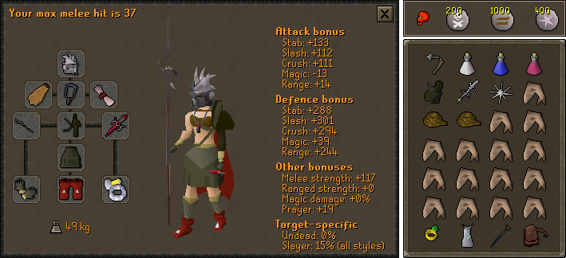

Hybrid - Melee/Ranged

Bludgeon > Zamorakian hasta > Saradomin sword > Godsword > Abyssal tentacle > Whip
Toxic blowpipe > Heavy ballista = Armadyl crossbow > Karil's c'bow > Rune c'bow > Crystal bow > Magic shortbow
Dragon warhammer > SGS = Crystal halberd > BGS > Dragon halberd > Dragon mace > Dragon dagger
Dragon defender* > Rune defender* > Toktz-ket-xil*
Odium ward* > Book of law* > Unholy book* > Book of balance*
Slayer** > Serpentine > Dwarven > Neitiznot
Blessed d'hide
Blessed d'hide
Primordial > Pegasian > Blessed d'hide = Dragon
Barrows > Dragon > Rune > Adamant > Regen bracelet > Combat bracelet
Fire > Ardougne 2+ = Skillcape (t) > God cloak > Obsidian > Legend's
Ranged skill cape > Ava's accumulator
Torture† > Fury > Glory
Anguish†
Berserker (i) > Tyrannical (i) > Ring of the gods (i)
Archers ring (i)
Any blessing‡ > Bolt rack > Diamond (e) > Ruby (e) = Runite bolts > Rune arrow
Notes
- With desert elite complete, ropes should be replaced with more food.
- Karabwans could be used for combo food.
- With Lumbridge elite complete, Dramen/Lunar staff is unnecessary.
- If you don't have a Quest cape, use Rings of slaying to get to a Fairy ring, otherwise bring Shantay passes and teleport to Al Kharid with a Glory from your house.
- Drink anti-poison before heading there.
- Drink a Stamina potion before heading there if you haven't done desert elite.
- The Restore potion is in case you get a Saradomin brew drop.
- Maximize offense bonuses since KQ pays no regard to your defense.
- *Only bring a shield/shield switch if using a 1-handed melee or ranged weapon, respectively.
- **Use on a Kalphite slayer task.
- †Only use the Amulet of torture if bringing an Amulet of anguish switch.
- ‡Only use a blessing if using a Blowpipe or Crystal bow.
Melee Only

Bludgeon > Godsword
Dragon warhammer > SGS = Crystal halberd > BGS > Dragon halberd > Dragon mace > Dragon dagger
Slayer* > Serpentine > Dwarven > Neitiznot
Bandos chestplate > Fighter torso > Verac's > Other Barrows
Bandos tassets > Verac's > Other Barrows
Primordial > Dragon
Barrows > Dragon > Rune > Adamant > Regen bracelet > Combat bracelet
Fire > Ardougne 2+ = Skillcape (t) > God cloak > Obsidian > Legend's
Torture > Fury
Berserker (i) = Warrior (i) = Tyrannical (i)
Any blessing
Notes
- With desert elite complete, ropes should be replaced with more food.
- Karabwans could be used for combo food.
- With Lumbridge elite complete, Dramen/Lunar staff is unnecessary.
- If you don't have a Quest cape, use Rings of slaying to get to a Fairy ring, otherwise bring Shantay passes and teleport to Al Kharid with a Glory from your house.
- Drink anti-poison before heading there.
- Drink a Stamina potion before heading there if you haven't done desert elite.
- The Restore potion is in case you get a Saradomin brew drop.
- Maximize offense bonuses since KQ pays no regard to your defense.
- Focus on attack bonus since KQ has the same slash/stab/crush defense on the second form.
- This method is likely only worthwhile if on a Kalphite slayer task.
- This method is only recommended if your ranged is lower than 75 or if you don't have ranged weapons.
- *If using the Bludgeon, the Tyrannical ring (i) is better than the Berserker ring (i).
- **Use on a Kalphite slayer task.
Melee Only - Veracs Method

Bludgeon > Zamorakian hasta > Saradomin sword > Godsword > Abyssal tentacle > Whip
Verac's flail
Dragon warhammer > SGS = Crystal halberd > BGS > Dragon halberd > Dragon mace > Dragon dagger
Verac's helm
Slayer* > Serpentine > Dwarven > Neitiznot
Verac's brassard
Verac's plateskirt
Primordial > Dragon
Barrows > Dragon > Rune > Adamant > Regen bracelet > Combat bracelet
Fire > Ardougne 2+ = Skillcape (t) > God cloak > Obsidian > Legend's
Torture > Fury
Berserker (i) > Tyrannical (i)** > Warrior (i)
Any blessing
Notes
- This method is recommended off task if you have low ranged and don't have a Bludgeon or Godsword.
- With desert elite complete, ropes should be replaced with more food.
- Karabwans could be used for combo food.
- With Lumbridge elite complete, Dramen/Lunar staff is unnecessary.
- If you don't have a Quest cape, use Rings of slaying to get to a Fairy ring, otherwise bring Shantay passes and teleport to Al Kharid with a Glory from your house.
- Drink anti-poison before heading there.
- Drink a Stamina potion before heading there if you haven't done desert elite.
- The Restore potion is in case you get a Saradomin brew drop.
- Maximize offense bonuses since KQ pays no regard to your defense.
- *Use on a Kalphite slayer task.
- **If using the Bludgeon, the Tyrannical ring (i) is better than the Berserker ring (i).